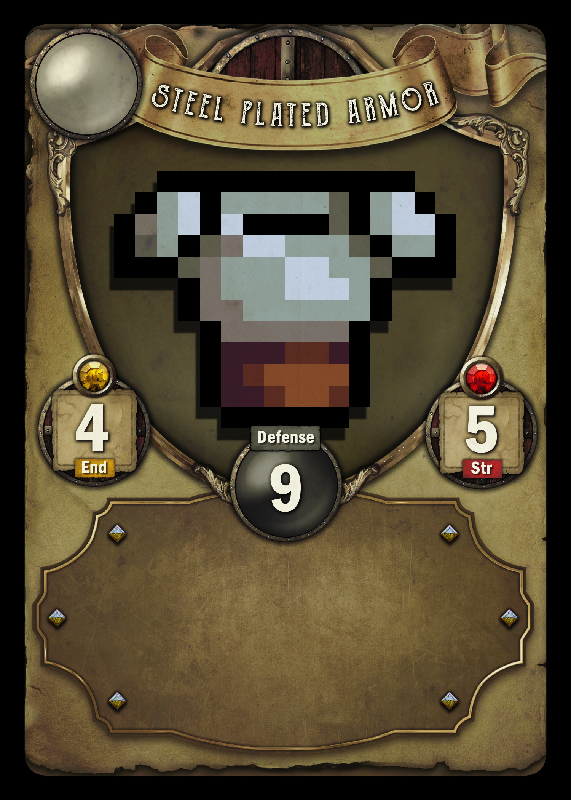

In this section youll find information explaining how to play the game, rules, characters, win conditions and information on equipement.
Tile Cards
Tile cards act as movement spaces, the tiles have a variety of terrains, encounters and hostiles.
There are a total of 52 tiles in a deck and each card has 2 tiles! at the start of a players turn they pick up a tile card and place it somewhere on the playable map.
the tiles are:
Movement Tiles
Enemy Tiles
Encounter Tiles
Dead End Tiles
Effect Tiles
Movement tiles allow players to move throughout the map, however when a player encounters a Dead End tile it prevents any movement in that direction and can no longer have tiles placed connecting to it.
Encounter tiles have a variety of different chances,
players can come across Traders allowing them to buy and sell equipement and items,
Quests Some encounters will have quests attached giving players rewards on completion these can be found in towns too,
Skill encounters have 2 different types: Players can come across a multiple choice skill based test or a test of their base special stats, depending on the outcome will affect the reward given,
Carnival The carnival is a unique encounter that allows players to attempt games to gain rewards once per person.
Tile cards can also have some negative affects:
Hostile tiles, these tiles will spawn a monster which players draw from a card deck which will give a random level monster (0-2) for the current version there are only a few monsters.
Mnsters will do damage each turn they are left on the board, players can als gain Items and Equipement after defeating them.
Monster levels are random and not determined on a players level or stats.
The other negative tile is a Effect tile, this will inflict a status ailement on a player when they land on this tile, these can be a variety of deadly conconctions. Burn, Poison, Slow or even Weakness affects.
Charcaters and Lore
Tesmalia the Elf Huntress
Tesmalia is an Elvish huntress born in the region of the Mystical Forest
Tesmalia starts equipped with a Short Bow and wears a Amulet of The Nine Seas Church
She does a base damage of 6-12 depending on a dice roll. Tesmalia can equip Light Armour
any form of Ranged bow or small dagger!
Tesmalia has two "Abilities":
Snipe Shot- Fires an armour piercing arrow dealing 8-12 base damage. (must have a Bow equipped)
Evade Up- Increases Evasion for 3 turns by 5.
Kinvar Hudor the Dwarven Warrior
Kinvar Hudor is a Dwarvern Warrior born in the Mountainous region.
Kinvar starts equipped with a Two Handed Axe and holds a Iron Buckler on his arm,
Kinvar does a base damage of 8-14 depending on dice role.
Kinvar can equip "Hevay Armour", "Two Handed Weapons" and a "Buckler shield".
Kinvar had two "Abilities"
Gem Find- Search the deck for one rare item
Armour Up- increases armour by 5 for 3 turns
Licera the Apprentice Mage
Licera is a nordic apprentice mage, bonr in Rievara and studies and the acadamey of mages.
Licera starts equipped with Training Staff and wears an Amulet of Curse Immunity around her neck,
Licera does a base damage of 6-10 depending on dice roll.
Licera has two "Abilities"
Area Blast- Does 3x damage of dice roll to the target
Resist Up- Increases Magic resistance by 5 for 3 turns
Bogs-Warl the Goblin Thief
Bogs-Warl is of Goblin origin, he was raised by the Largiles in the Lirk Swamp.
Bogs-Warl starts equipped with a Serrated Dagger and holds a Coin Purse on his back,
Bogs-Warl does a base damage of 6-10 and has a chance to cause bleed depending on dice roll.
Bogs-Warl has two "Abilities"
Steal- Chooses a player and steals 3 cards, chooses a card and discrads two
Evade Up- Increases Evasion by 10 for 3 turns
Folora the Priestess
Folora is a Nordic Priestess, her origin is unkown however she resides in the "Nine Seas Church"
Folora starts equipped with a Healing Staff and wears an Amulet of the Nine Seas Church around her neck,
Folora does a base damage of 6-9 depending on dice roll.
Folora has two "Abilities"
Party Heal- Heals up to 4 other players by 25% of their max health
Harvest- Search the item deck for a Healing Item
Conspirators
Note
Items listed below are only Beta examples, more items will be added as the project moves forward. Cards will be implemented next to their counter parts once their creation is complete.
Equipment
Armour
In this section it will explain the two types of Armour who can equip them and stats required for certain pieces.
Equipment cards are obtainable for all players, however some equipement reuire Dexterity or a Specail stat like Strength or Perception.

Heavy Armour
Heavy armour is a set of Armour with high defense and damage resistance, however it tends to be very heavy and reuires a high Strength stat.
Initially the only characters that can equip these are Kinvar Hudor but in future there will be additional characters who can equip these items.
Heavy armour also contains status buffs, for example certain armour like Steel Plated prevent Bleed status affects and can also prevent a character from being Pierced
Light Armour is a set of Armour with low defense and damage resistance, however it tends to be very light and can boost Agility but is more supseptible to status effects.
Initially, most characters can use and equip the armour, Tesmalia can equip specialised armour to increase her Perception.
Light Armour also provides a boost to Evasion and speed and protects against slowness buffs.
Leather vest- Perception 3, Agility 2, Defense 2
Cotton Vest- Endurance 2, Defense 2
Feathered Hat- Perception 2, Agility 1, Defense 1
Leather Hood- Endurance 2, Defense 2
Leather Boots- Strength 2, Endurance 2, Defense 2
Cotton Pads- Endurance 2, Defense 1
Magical Armour
Magical armour is a set of Armour with low defense and damage resistence but high Magic Resistance, the armour tends to be very light but offers little to none status protection.
Initially, most characters can equip this armour however certain Robes require high Intelligence, Folora can wear Blessed Armour, whereas Licera can't equip this type of armour.
Magical Armour also provides a boost to Blessings and Curse Immunity and negates certain Status effects.
Short Bow- stats: Perception 3, Base Damage of 7, Passive- Ranged (Allows attacks from 1 additional tile away)
Long Bow- stats: Perception 5, Base Damage of 11, Passive- Ranged Skill- Snipe shot
Staffs
Fire Staff- stats: Intelligence 4, Base Damage of 8, Passive- Ranged, Effect Burn
Apprentice Staff- stats: Intelligence 6, Base Damage of 12, Passive- Ranged, Skill- Area Blast
Daggers
Dagger- stats: Dexterity 5, Strength 2, Base Damage of 8, Crit Chance 1%, Effect Bleed
Item Cards
Item Cards provide different ailements, potions and accessories that provide additional buffs or ngate negative buffs.
Here is a full list of all the Items in the current Beta version.
Potion of Healing Heals 20HP and causes 10 Damage to Spirits on the map when used
Potion of Haste Permanantly increase Speed by 5
Potion of Strength Permanantly increases Strength by 2
Armour Up Permanantly increase Armour by 1
Evade Up Permanantly increases Evasion by 3
Accessories
Accessories are wearable items, just like Armour these items hold additional buffs and immunity to effects.
Currently only Stat relevant accessories have been added, more will be added in the future.
Ring of Defense increases Defense by 2
Amulet of Agility increases Agility by 3
Enchanted Scarf increases Magic Resistance by 4
Amulet of the Nine Seas Church Immunity to Curse and gives Blessed buff

.jpg)